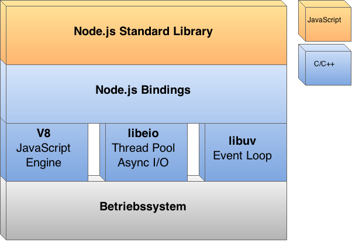

NODE.JS
Serverseitiges JavaScript
Seminar IM SS2015 - 12.05.2015
Katrin Schäfers und Jakob Kneißl
Agenda
- Einführung, Aufbau und Module
- Hello World
- Event Loop
- Praxisbeispiel
- Node.js in der Praxis
- Diskussion
Lernziele
Was wir am Ende gelernt haben
- Aufbau von Node.js
- Eventgetriebene Programmierung
- Entwicklung eines einfachen Webservers
- Strukturierung und Organisation von Node.js Code

Serverseitiges Javascript
- JavaScript Framework für serverseitige Entwicklung
- Entwickelt 2009 von Ryan Dahl, finanziert von Joyent
- Implementiert in C/C++ und JavaScript
- Verfügbar für Windows, Linux und OS X
Hello Node.js
auf der Konsole
console.log("Hello Node!")
C:\Users\Katrin\nodeProject>node hello.js
Hello Node!
Node.js - Aufbau
Kernkomponenten

Module in Node.js
- Code wird in Modulen organisiert
- Node.js Module bieten eine definierte Schnittstelle
- Module können einfach installiert und eingebunden werden
- Ziele:
- separation of concerns
- information hiding
- encapsulation
- clean code
Module in Node.js
Modulquellen
- Vorinstallierte Basismodule (http, fs)
- Über Node Package Manager npm (express, socket.io)
- Lokal erstellt
"Hello World"
in Node.js
var http = require("http");
http.createServer(
).listen(8888);
http.createServer(function(request, response) {
response.writeHead(200, {"Content-Type": "text/plain"});
response.write("Hello World");
response.end();
}).listen(8888);
Ausgabe im Browser
Eventgetriebene
Programmierung in Node.js
Performanceprobleme
- I/O dauert meistens am längsten
- Wartezeiten für I/O müssen minimiert werden
Node.js Lösung
- I/O läuft immer asynchron...
- ... durch eventgetriebene Programmierung
Eventgetriebene
Programmierung in Node.js
Funktionsweise
- Der Programmablauf wird durch Events gesteuert
- Definierte Trigger lösen Events aus
- Ausgelöste Events werden in einer Queue abgelegt
- Ein Thread, die Event Loop, verarbeitet alle Events in der Queue
Event Loop in Node.js
Ablauf

Event Loop in Node.js
Beispiel - Schritt 1
http.createServer(function(request, response) {
response.writeHead(200, {"Content-Type": "text/plain"});
response.write("Hello World");
response.end();
}).listen(8888);
Callback Funktion wird am HTTP Server registriert
Event Loop in Node.js
Beispiel - Schritt 2
Client Request erreicht den Node Server
Event Loop in Node.js
Beispiel - Schritt 3

Request wird als Event in die Queue eingetragen
Event Loop in Node.js
Beispiel - Schritt 4

Event Loop führt das Event aus
Event Loop in Node.js
Beispiel - Schritt 4
function(request, response) {
response.writeHead(200, {"Content-Type": "text/plain"});
response.write("Hello World");
response.end();
}
- Event Code: auf den Request registrierter Callback
- Callback Parameter wurden durch den Event Auslöser gesetzt
Event Loop in Node.js
Beispiel - Schritt 5

Event wird fertig bearbeitet
Optional: I/O Jobs werden deligiert, Callback wird gesetzt
Event Loop in Node.js
Beispiel - Schritt 6

Ergebnis Event mit Callback wird in die Queue eingetragen
Event Loop in Node.js
Technische Sicht - Reactor Pattern

In Node.js in der Bibliothek libuv implementiert
Event Loop in Node.js
Die wichtigen Unterschiede
Sequenziell | Eventgetrieben mit Node.js |
|---|
| Programmsteuerung durch sequenziellen Code | Programmsteuerung durch Events |
| Ein Thread pro Request | Ein Thread für alle Requests |
| Nebenläufigkeit wird explizit implementiert | Nebenläufigkeit durch Framework gesteuert |
Praxisbeispiel - Ziele
- Bedienung durch Browser
- Texteingabefeld
- Weiterleitung
- Anzeige des eingegebenen Textes
Komponenten

WebService als Modul (V1)

Server-Modul (V1)
var http = require("http");
function start() {
function onRequest(request, response) {
response.writeHead(200, {"Content-Type": "text/plain"});
response.write("Hello World");
response.end();
}
http.createServer(onRequest).listen(8888);
}
exports.start = start;
index.js (V1)
var server = require("./server");
server.start();
Ausgabe im Browser (V1)
Router hinzufügen (V2)

Router-Modul (V2)
function route(pathname) {
console.log("About to route a request for " + pathname);
}
exports.route = route;
index.js (V2)
var server = require("./server");
var router = require("./router");
server.start(router.route);
Server-Modul (V2)
var http = require("http");
var url = require("url");
function start(route) {
function onRequest(request, response) {
var pathname = url.parse(request.url).pathname;
route(pathname);
response.writeHead(200, {"Content-Type": "text/plain"});
response.write("Hello World");
response.end();
}
http.createServer(onRequest).listen(8888);
}
exports.start = start;
Ausgabe im Browser (V2)
Ausgabe auf der
Konsole (V2)
C:\Users\Katrin\nodeProject>node index.js
About to route a request for /
Request Handler
einfügen (V3)

Request Handler-Modul
(V3)
function start() {
console.log("Request handler 'start' was called.");
}
function upload() {
console.log("Request handler 'upload' was called.");
}
exports.start = start;
exports.upload = upload;
index.js (V3)
var server = require("./server");
var router = require("./router");
var requestHandlers = require("./requestHandlers");
var handle = {};
handle["/"] = requestHandlers.start;
handle["/start"] = requestHandlers.start;
handle["/upload"] = requestHandlers.upload;
server.start(router.route, handle);
Server-Modul (V3)
var http = require("http");
var url = require("url");
function start(route, handle) {
function onRequest(request, response) {
var pathname = url.parse(request.url).pathname;
route(handle, pathname);
response.writeHead(200, {"Content-Type": "text/plain"});
response.write("Hello World");
response.end();
}
http.createServer(onRequest).listen(8888);
}
exports.start = start;
Router-Modul (V3)
function route(handle, pathname) {
if (handle[pathname] === 'function') {
handle[pathname]();
} else {
console.log("No request handler found for " + pathname);
}
}
exports.route = route;
Ausgabe im Browser (V3)
Ausgabe auf der
Konsole (V3)
C:\Users\Katrin\nodeProject>node index.js
Request handler 'start' was called.
Wer antwortet auf den
Request?


Request Handler
Funkionalität geben (V4)
Server-Modul (V4)
var http = require("http"); var url = require("url");
function start(route, handle) {
function onRequest(request, response) {
var postData = "";
var pathname = url.parse(request.url).pathname;
request.setEncoding("utf8");
request.addListener("data", function (postDataChunk) {
postData += postDataChunk;
});
request.addListener("end", function () {
route(handle, pathname, response, postData);
});
}
http.createServer(onRequest).listen(8888);
}
exports.start = start;
Router-Modul (V4)
function route(handle, pathname, response, postData) {
if (typeof handle[pathname] === 'function') {
handle[pathname](response, postData);
} else {
response.writeHead(404, {"Content-Type": "text/plain"});
response.write("404 Not found");
response.end();
}
}
exports.route = route;
Request Handler-Modul (V4)
Teil 1
function start(response, postData) {
var body = '<html> <head>' +
'<meta http-equiv="Content-Type" content="text/html; ' +
'charset=UTF-8" /> </head> <body>' +
'<form action="/upload" method="post">' +
'<textarea name="text" rows="10" cols="30"></textarea>' +
'<input type="submit" value="Submit text" />' +
'</form> </body> </html>';
response.writeHead(200, {"Content-Type": "text/html"});
response.write(body);
response.end();
}
Request Handler-Modul (V4)
Teil 2
var querystring = require("querystring");
function upload(response, postData) {
console.log("requestHandler: Request handler 'upload' was called.");
response.writeHead(200, {"Content-Type": "text/plain"});
response.write("You've sent the text:\n" +
querystring.parse(postData).text);
response.end();
}
exports.start = start;
exports.upload = upload;
Ausgabe im Browser (V4)
Node.js in der Praxis
Aktueller Stand
- junges, dynamisches Projekt
- große Community
- teilweise noch unausgereifte Module
Node.js in der Praxis
Tests und Code Qualität
- Entwicklung: Plugins für gängige Entwicklungstools
- Unittests: Mocha
- Mocking: Sinon JS, Nock
- Coverage: Istanbul
- Statische Analyse: JSHint, JSCS
Node.js in der Praxis
Anwendungsbereiche
- Browsergames
- REST APIs
- Database APIs
- IoT/Embedded
Node.js in der Praxis
Fallbeispiel: PayPal
- Aufgabe: Neuimplementierung der Paypal Accountübersicht
- Ziel: Auflösung des Bruchs zwischen Front- und Backend
- Umsetzung mit Node.js
- Backup: Parallele Entwicklung in JavaEE
Fallbeispiel: PayPal
Unterschiede Node.js - JavaEE Implementierung:
- Fast halbierte Entwicklungszeit trotz geringerer Entwicklerzahl
- 33% weniger Lines of Code
- 40% weniger Dateien
- Doppelte Requests pro Sekunde
- Durchschnittliche Antwortzeit 35% (200ms) reduziert
Vielen Dank für die Aufmerksamkeit!
Fragen? / Diskussion
Quellen
- Manuel Kiessling, The Node Beginner Book
- Jeff Harell, Node.js at Paypal, www.paypal-engineering.com/2013/11/22/node-js-at-paypal/
- www.nodejs.org
- www.nodecode.de